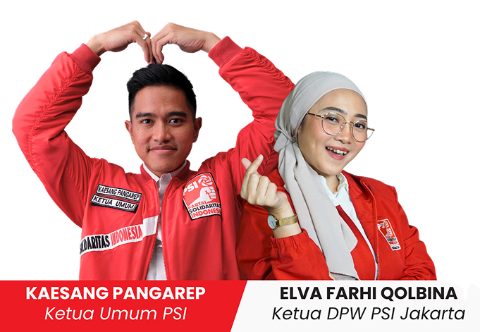

2 Orang Muda Keren yang Memimpin Jalannya Mesin Partai Solidaritas Indonesia di Tingkat Nasional dan Provinsi
Mengenal lebih
Nilai
Perjuangan PSI DKI Jakarta

Budaya Politik
Memberikan akses untuk orang muda Jakarta yang progresif dan inklusif
Siapa Saja
Orang muda penggerak PSI Jakarta?

Pojok Solidaritas
Kata mereka tentang PSI Jakarta
Terus bekerja tanpa lelah
Saya sangat bangga akan kinerja bro dan sis DPW PSI Jakarta yang terus bekerja tanpa lelah, khususnya saat...

Sis Grace Natalie
Wakli Ketua Dewan PembinaPSI Jakarta Terkini
Suara PSI Jakarta